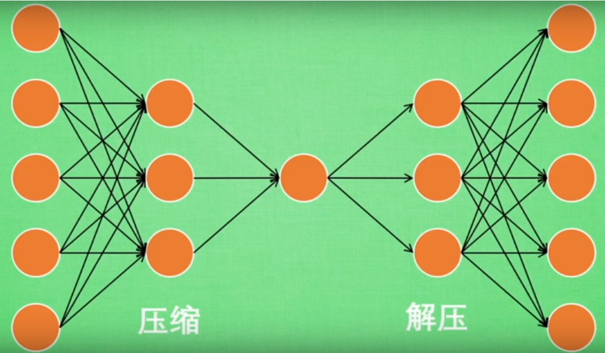
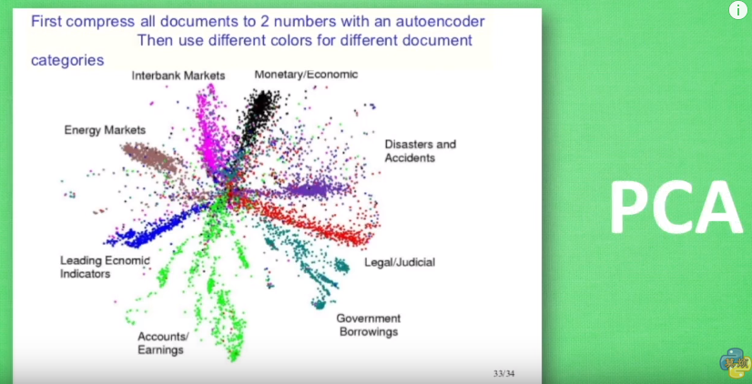
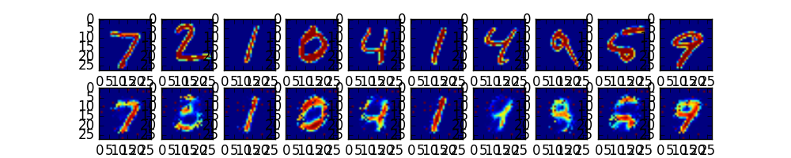
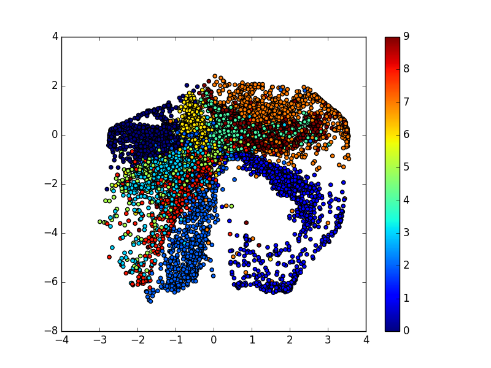

自编码 Autoencoder (非监督学习)
作者: Hao 编辑: 莫烦 2016-11-03
学习资料:
- 相关代码
- 为 TF 2017 打造的新版可视化教学代码
- 机器学习-简介系列 Autoencoder
要点
Autoencoder 简单来说就是将有很多Feature的数据进行压缩，之后再进行解压的过程。 本质上来说，它也是一个对数据的非监督学习，如果大家知道 PCA (Principal component analysis)， 与 Autoencoder 相类似，它的主要功能即对数据进行非监督学习，并将压缩之后得到的“特征值”，这一中间结果正类似于PCA的结果。 之后再将压缩过的“特征值”进行解压，得到的最终结果与原始数据进行比较，对此进行非监督学习。如果大家还不是非常了解，请观看机器学习简介系列里的 Autoencoder 那一集； 如果对它已经有了一定的了解，那么便可以进行代码阶段的学习了。大概过程如下图所示：

今天的代码，我们会运用两个类型：
- 第一，是通过Feature的压缩并解压，并将结果与原始数据进行对比，观察处理过后的数据是不是如预期跟原始数据很相像。（这里会用到MNIST数据）
- 第二，我们只看
encoder压缩的过程，使用它将一个数据集压缩到只有两个Feature时，将数据放入一个二维坐标系内，特征压缩的效果如下：

同样颜色的点，代表分到同一类的数据。（Lebel相同）
Autoencoder
# Parameter
learning_rate = 0.01
training_epochs = 5 # 五组训练
batch_size = 256
display_step = 1
examples_to_show = 10
我们的MNIST数据，每张图片大小是 28x28 pix，即 784 Features：
# Network Parameters
n_input = 784 # MNIST data input (img shape: 28*28)
- 在压缩环节：我们要把这个Features不断压缩，经过第一个隐藏层压缩至256个 Features，再经过第二个隐藏层压缩至128个。
- 在解压环节：我们将128个Features还原至256个，再经过一步还原至784个。
- 在对比环节：比较原始数据与还原后的拥有 784 Features 的数据进行 cost 的对比，根据 cost 来提升我的 Autoencoder 的准确率，下图是两个隐藏层的 weights 和 biases 的定义：
# hidden layer settings
n_hidden_1 = 256 # 1st layer num features
n_hidden_2 = 128 # 2nd layer num features
weights = {
'encoder_h1':tf.Variable(tf.random_normal([n_input,n_hidden_1])),
'encoder_h2': tf.Variable(tf.random_normal([n_hidden_1,n_hidden_2])),
'decoder_h1': tf.Variable(tf.random_normal([n_hidden_2,n_hidden_1])),
'decoder_h2': tf.Variable(tf.random_normal([n_hidden_1, n_input])),
}
biases = {
'encoder_b1': tf.Variable(tf.random_normal([n_hidden_1])),
'encoder_b2': tf.Variable(tf.random_normal([n_hidden_2])),
'decoder_b1': tf.Variable(tf.random_normal([n_hidden_1])),
'decoder_b2': tf.Variable(tf.random_normal([n_input])),
}
下面来定义 Encoder 和 Decoder ，使用的 Activation function 是 sigmoid，
压缩之后的值应该在 [0,1] 这个范围内。在 decoder 过程中，通常使用对应于 encoder 的 Activation function：
# Building the encoder
def encoder(x):
# Encoder Hidden layer with sigmoid activation #1
layer_1 = tf.nn.sigmoid(tf.add(tf.matmul(x, weights['encoder_h1']),
biases['encoder_b1']))
# Decoder Hidden layer with sigmoid activation #2
layer_2 = tf.nn.sigmoid(tf.add(tf.matmul(layer_1, weights['encoder_h2']),
biases['encoder_b2']))
return layer_2
# Building the decoder
def decoder(x):
# Encoder Hidden layer with sigmoid activation #1
layer_1 = tf.nn.sigmoid(tf.add(tf.matmul(x, weights['decoder_h1']),
biases['decoder_b1']))
# Decoder Hidden layer with sigmoid activation #2
layer_2 = tf.nn.sigmoid(tf.add(tf.matmul(layer_1, weights['decoder_h2']),
biases['decoder_b2']))
return layer_2
来实现 Encoder 和 Decoder 输出的结果：
# Construct model
encoder_op = encoder(X) # 128 Features
decoder_op = decoder(encoder_op) # 784 Features
# Prediction
y_pred = decoder_op # After
# Targets (Labels) are the input data.
y_true = X # Before
再通过我们非监督学习进行对照，即对 “原始的有 784 Features 的数据集” 和 “通过 ‘Prediction’ 得出的有 784 Features 的数据集” 进行最小二乘法的计算，并且使 cost 最小化:
# Define loss and optimizer, minimize the squared error
cost = tf.reduce_mean(tf.pow(y_true - y_pred, 2))
optimizer = tf.train.AdamOptimizer(learning_rate).minimize(cost)
最后，通过 Matplotlib 的 pyplot 模块将结果显示出来， 注意在输出时MNIST数据集经过压缩之后 x 的最大值是1，而非255：
# Launch the graph
with tf.Session() as sess:
# tf 马上就要废弃tf.initialize_all_variables()这种写法
# 替换成下面:
sess.run(tf.global_variables_initializer())
total_batch = int(mnist.train.num_examples/batch_size)
# Training cycle
for epoch in range(training_epochs):
# Loop over all batches
for i in range(total_batch):
batch_xs, batch_ys = mnist.train.next_batch(batch_size) # max(x) = 1, min(x) = 0
# Run optimization op (backprop) and cost op (to get loss value)
_, c = sess.run([optimizer, cost], feed_dict={X: batch_xs})
# Display logs per epoch step
if epoch % display_step == 0:
print("Epoch:", '%04d' % (epoch+1),
"cost=", "{:.9f}".format(c))
print("Optimization Finished!")
# # Applying encode and decode over test set
encode_decode = sess.run(
y_pred, feed_dict={X: mnist.test.images[:examples_to_show]})
# Compare original images with their reconstructions
f, a = plt.subplots(2, 10, figsize=(10, 2))
for i in range(examples_to_show):
a[0][i].imshow(np.reshape(mnist.test.images[i], (28, 28)))
a[1][i].imshow(np.reshape(encode_decode[i], (28, 28)))
plt.show()
通过5个 Epoch 的训练，（通常情况下，想要得到好的的效果，我们应进行10 ~ 20个 Epoch 的训练）我们的结果如下：

上面一行是真实数据，下面一行是经过 encoder 和 decoder 之后的数据，如果继续进行训练，效果会更好。
Encoder
在类型二中，我们只显示 encoder 之后的数据， 并画在一个二维直角坐标系内。做法很简单，我们将原有 784 Features 的数据压缩成仅剩 2 Features 的数据：
# Parameters
learning_rate = 0.01 # 0.01 this learning rate will be better! Tested
training_epochs = 10 # 10 Epoch 训练
batch_size = 256
display_step = 1
通过四层 Hidden Layers 实现将 784 Features 压缩至 2 Features：
# hidden layer settings
n_hidden_1 = 128
n_hidden_2 = 64
n_hidden_3 = 10
n_hidden_4 = 2
Weights 和 biases 也要做相应的变化：
weights = {
'encoder_h1': tf.Variable(tf.truncated_normal([n_input, n_hidden_1],)),
'encoder_h2': tf.Variable(tf.truncated_normal([n_hidden_1, n_hidden_2],)),
'encoder_h3': tf.Variable(tf.truncated_normal([n_hidden_2, n_hidden_3],)),
'encoder_h4': tf.Variable(tf.truncated_normal([n_hidden_3, n_hidden_4],)),
'decoder_h1': tf.Variable(tf.truncated_normal([n_hidden_4, n_hidden_3],)),
'decoder_h2': tf.Variable(tf.truncated_normal([n_hidden_3, n_hidden_2],)),
'decoder_h3': tf.Variable(tf.truncated_normal([n_hidden_2, n_hidden_1],)),
'decoder_h4': tf.Variable(tf.truncated_normal([n_hidden_1, n_input],)),
}
biases = {
'encoder_b1': tf.Variable(tf.random_normal([n_hidden_1])),
'encoder_b2': tf.Variable(tf.random_normal([n_hidden_2])),
'encoder_b3': tf.Variable(tf.random_normal([n_hidden_3])),
'encoder_b4': tf.Variable(tf.random_normal([n_hidden_4])),
'decoder_b1': tf.Variable(tf.random_normal([n_hidden_3])),
'decoder_b2': tf.Variable(tf.random_normal([n_hidden_2])),
'decoder_b3': tf.Variable(tf.random_normal([n_hidden_1])),
'decoder_b4': tf.Variable(tf.random_normal([n_input])),
}
与类型一类似，创建四层神经网络。（注意：在第四层时，输出量不再是 [0,1] 范围内的数，而是将数据通过默认的 Linear activation function 调整为 (-∞,∞) ：
def encoder(x):
layer_1 = tf.nn.sigmoid(tf.add(tf.matmul(x, weights['encoder_h1']),
biases['encoder_b1']))
layer_2 = tf.nn.sigmoid(tf.add(tf.matmul(layer_1, weights['encoder_h2']),
biases['encoder_b2']))
layer_3 = tf.nn.sigmoid(tf.add(tf.matmul(layer_2, weights['encoder_h3']),
biases['encoder_b3']))
layer_4 = tf.add(tf.matmul(layer_3, weights['encoder_h4']),
biases['encoder_b4'])
return layer_4
def decoder(x):
layer_1 = tf.nn.sigmoid(tf.add(tf.matmul(x, weights['decoder_h1']),
biases['decoder_b1']))
layer_2 = tf.nn.sigmoid(tf.add(tf.matmul(layer_1, weights['decoder_h2']),
biases['decoder_b2']))
layer_3 = tf.nn.sigmoid(tf.add(tf.matmul(layer_2, weights['decoder_h3']),
biases['decoder_b3']))
layer_4 = tf.nn.sigmoid(tf.add(tf.matmul(layer_3, weights['decoder_h4']),
biases['decoder_b4']))
return layer_4
在输出图像时，我们只关心 encoder 压缩之后，即 decoder 解压之前的结果：

如果你觉得这篇文章或视频对你的学习很有帮助, 请你也分享它, 让它能再次帮助到更多的需要学习的人. 莫烦没有正式的经济来源, 如果你也想支持 莫烦Python 并看到更好的教学内容, 赞助他一点点, 作为鼓励他继续开源的动力.